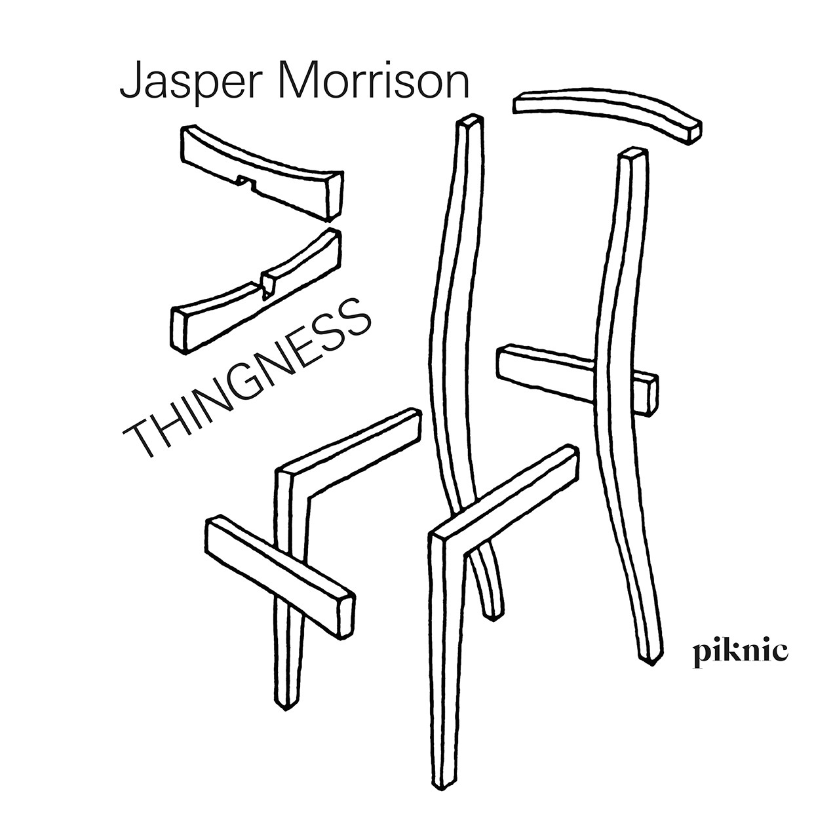

Jasper Morrison은 디자인이 단순히 미적인 것에 국한되지 않고, 사용자의 경험과 기능성을 고려해야 한다고 믿습니다. 그의 철학은 "유용함과 아름다움의 조화"에 중점을 두고 있습니다.
그는 일상에서의 경험을 중시하며, 일상적인 사물들이 어떻게 사용자에게 영향을 미치는지를 탐구합니다. 이러한 접근은 그의 작품에서 쉽게 발견할 수 있습니다.
모리슨은 지속 가능한 디자인의 중요성을 강조합니다. 그는 자원의 효율적인 사용과 환경에 대한 책임을 디자인 과정의 핵심 요소로 삼고 있습니다.
